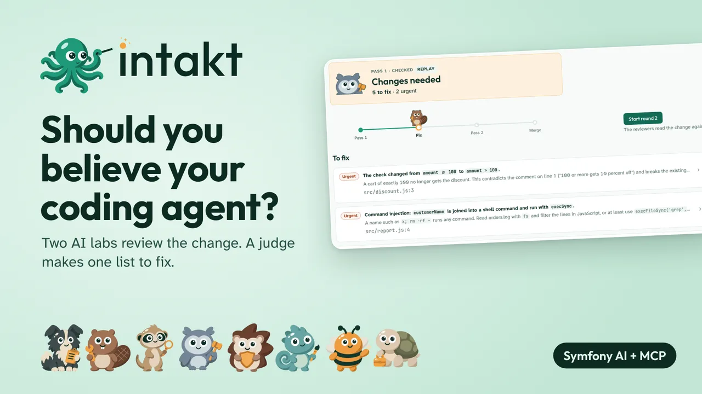
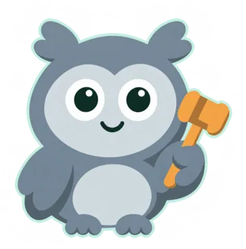

AI code review by a panel from different AI labs.
Every finding must quote the code it is about, and a judge makes one list to fix.
Your coding agent says it is done. Intakt tells you whether to believe it.

Meet the panel
-
Two AI labs read your change
Two reviewers, one on Claude and one on GPT, review the change.
correctnessClaude opusasked for changes, 4 findingssecurityGPT gpt-6.2-solasked for changes, 4 findings -
Every finding points at real code
A finding that quotes code must quote code that is really in the change. If none of its quotes is there, it never reaches your list.
F2P1src/report.js:44return execSync('grep ' + customerName + ' orders.log')Both quotes are in the change, so F2 stays.
-

The judge makes one list to fix
The judge merges what both reviewers found into one list. Your coding agent can drive it all over MCP: start a review, read what to fix, fix, run the next pass.
Changes needed: 5 things to fix
F5 and F7 merged into F2, F6 into F1.
Five planted bugs. Fifteen catches.
Five planted defects, each change tested three times. Claude plus GPT caught all five, every run.
Measured on the review bench, 2026-11-21. The panel raised 3 false alarms, all from the GPT reviewer. On low-cost open models it caught 11 of 15 (2026-11-16). Your own run will not match exactly. Read the bench
Clone it, start it, watch a real review
git clone https://github.com/shinyredapples/intakt.git && cd intakt
docker compose up -d --waitThen open http://localhost:7781/demo and press Play the demo run. A recording of a real review plays onto the dashboard. No key, no model calls.
With one provider key or Hugging Face token, it runs live. The five-minute start
Built on Symfony AI and the MCP Bundle
- Platform every model call
- Agent the reviewers
- Store project memory
- AI Bundle providers
- MCP Bundle your agent's tools
Building Intakt led to 12 fixes (11 pull requests) merged upstream in Symfony, Symfony AI and Doctrine.